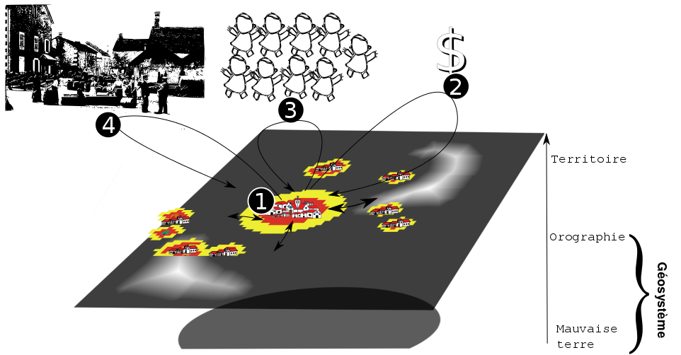

VitiTerroir pour un géographe
l'approche modélisatrice des systèmes spatiaux viticoles
Etienne DELAY doctorant GEOLAB/ @ElCep Sous la direction de Eric Rouvellac et Philippe Allée
Séminaire inaugural VitiTerroir - 16 septembre 2014 lieu : Laboratoire Archéologie et Territoires
L'espace dans la modéisaltion
et les problématique liée au paysages
Thématique de recherche
“Prospective paysagère des territoires viticoles de fortes pentes”
Une approche largement tourner vers la modélisation à base d'agents pour explorer la complèxité des interactions Homme ↔ Environnement dans une contexte viti-vinicole
Les axes de vitiTerroir
et déambulation géographique
Quelques exemples de modèles a base d'agents orienté viticulture
- Le changement climatique
- Acidity GIS
- CELL ( Confusion Landscape Lobesias )
- Modification potentielle des règles juridiques
- MASiVe (MontAgne Innovation Viticulture)
- Tranformation des marchés
- Dion still alive
- VicTor ( VIticulture Consomation TOuRaine )
- Transformation probable des pratiques viticoles
- CELL ( Confusion Landscape Lobesias )
- Accentuation des prosessus de croissance urbaine
Qu'est ce qu'on observe avec ces modèles ?
Des phénomènes et des échelles très différentes !
Des exemples au travers de 4 modèles :
- CELL
- Acidity GIS
- Dion et ViCTor
-
Credit photo : Ellie sur flickr
CELL :
un modèle "data driven"
De quoi parle-t-on ?
“L'Eudémis (Lobesia botrana) est un ravageur de la vigne aussi connu sous le nom de ver de la grappe ou de tordeuse (comme la cochylis et l'Eulia). ”
Source : Wikipedia

Source : Bayer
Des parcelles temoins
sur Collioure depuis 1999
Le cycle bilogique
théoriquement 4 générations de lobesia par ans. C'est généralement sur la 3èmegénération que la récolte est sensible (grape en formation)

mais dans la pratique, la 3ème génération n'est pas toujours facile à observer!
Acidity GIS
un modèle entre "concept driven" et "data driven"
Dion et VicTor
deux modèles "concept Driven"
Objet d'étude : les paysages viticoles
Comment explorer des comportements passés pour comprendre les formes paysagères actuelles?
 Le vignoble de Banyuls-sur-Mer
Le vignoble de Banyuls-sur-Mer
Explorer les comportements catastrophique (au sens de R.Thom 1989) pour approcher les limites de validiter du modèle.
1) En revisitant R. Dion
Un travail initié en réponse à un article de A. Banos, D. Moreno, C. Pivano et P. Taillandier sur cybergeo proposant de revisiter les travaux classiques des théories géographiques. Pour nous R.Dion, 1952, "Querelle Des Anciens et Des Modernes Sur Les Facteurs de La Qualité Du Vin", Annales de Géographie 61, no. 328 (1952): p417–431
des propositions tel que:
- si les fondateurs de nos vignobles avaient été aussi dociles qu'on le dit aux suggestions de la nature, ils se fussent bien garder d'aventurer leurs plantations hors de la région méditerranéenne […](p429)
- avant les chemins de fer, les plus belles possibilités de débit, celles qu'assuraient les grands marchés de l'Europe septentrionale, où le vin se vendait au plus haut prix, étaient limitées aux abords des ports maritimes, des rivières navigables et de quelques grandes routes de terre, aptes aux charriots lourds (p419)
- ...
pour s'intéroger sur 3 points :
- Comment répond dans la durée un territoire de production face à un choc extérieur de demande ?
- Peut-on faire l'hypothèse que la qualité est une fonction du temps ?
- Comment s'ordonnancent les facteurs influençant la qualité sur le territoire ?
Posture
“Growing Artificial Societies from Bottom Up”
J.M Epstein et R. Axtell 1996
Dans cette lignée nous avons :
- travaillé sur un monde et des sociétés virtuels
- autour d'un individualisme méthodologique
- réduit le système à des interactions essentielles strictement décrites dans l'article de Roger DION (1952)
Un territoire en autarcie
Des réactions au marché ?
Et si on parlait de qualité ?
2) en intérogant VicTor
Les paysages sont emblématiques de la capacité d'adaptation des sociétés qui les ont construits
Etudier le basculement sur le temps long d'une viticulture de subsistance à une viticulture d'exportation. Quelles sont les conséquences de la compétition spatiale entre différents types d'agriculture et leurs réponses à différents marchés.
En deux mots ... comment ça fonctionne ?
- n°1 : Extension/rétractation des parcelles pour chaque localité
- n°2 : Mise à jour du capital des localités
- n°3 : Évolution de la population des localités
- n°4 : Mise à jour du prix d'achat et de vente des productions (logistique ou linéaire) de manière généralisée à tout le système
En deux mots ... qu'est-ce qu'on a mis derrière ?
la minute logiciel libre
- un modèle multi-agents sur Netlogo
- une analyse de sensibilité avec OPENMOLE sur CALI
- une exploration des résultats en cour avec R
 crédit image : GNU fondation
crédit image : GNU fondation
Les SMA, le temps long et les SHS
Les SMA permettent :
- d'accompagner la réflexion du chercheur
- d'explorer des comportements et des configurations difficilement envisageables
- de préparer à la réception et à l'identification de comportements réels
L’originalité première de ce projet réside dans la prise en compte du caractère complexe du système viti-vinicole, conçu comme la combinaison de trois sous-systèmes : le sociosystème, l’écosystème et le géosystème [Chouquer 2000]
.Les filières professionnelles seront particulièrement intéressées par les développements de VitiTerroir, qui doit ouvrir sur une meilleure connaissance et compréhension de la fabrique des territoires des vins.
le projet VitiTerroir débouchera sur un outil prototype de simulation, initiateur d'un véritable outil d'aide à la décision pour les politiques publiques.
VitiTerroir propose d'élaborer un outil prospectif grâce à une plongée dans le passé lointain, proche, et sub-actuel. VitiTerroir sera d'abord l'occasion d’approfondir la connaissance historique de plusieurs vignobles de la région Centre par un important travail de dépouillement de sources et des analyses minutieuses. A l'issue du projet, l'outil de simulation permettra de proposer des scenarios d'évolution historique de la viticulture dans des zones pour lesquelles on ne dispose d'aucune donnée.
Merci de votre Attention

vous pouvez retrouver cette présentation sur GitHub
 réalisé avec reveal.js
crédit photo : Thomas Misnyovszki on Flick'r
réalisé avec reveal.js
crédit photo : Thomas Misnyovszki on Flick'r
Heads Up
reveal.js is a framework for easily creating beautiful presentations using HTML. You'll need a browser with support for CSS 3D transforms to see it in its full glory.
Vertical Slides
Slides can be nested inside of other slides, try pressing down.
Basement Level 1
Press down or up to navigate.
Basement Level 2
Cornify

Basement Level 3
That's it, time to go back up.
Slides
Not a coder? No problem. There's a fully-featured visual editor for authoring these, try it out at http://slid.es.
Point of View
Press ESC to enter the slide overview.
Hold down alt and click on any element to zoom in on it using zoom.js. Alt + click anywhere to zoom back out.
Works in Mobile Safari
Try it out! You can swipe through the slides and pinch your way to the overview.
Marvelous Unordered List
- No order here
- Or here
- Or here
- Or here
Fantastic Ordered List
- One is smaller than...
- Two is smaller than...
- Three!
Transition Styles
You can select from different transitions, like:
Cube -
Page -
Concave -
Zoom -
Linear -
Fade -
None -
Default
Themes
Reveal.js comes with a few themes built in:
Default -
Sky -
Beige -
Simple -
Serif -
Night
Moon -
Solarized
* Theme demos are loaded after the presentation which leads to flicker. In production you should load your theme in the <head> using a <link>.
Global State
Set data-state="something" on a slide and "something"
will be added as a class to the document element when the slide is open. This lets you
apply broader style changes, like switching the background.
Custom Events
Additionally custom events can be triggered on a per slide basis by binding to the data-state name.
Reveal.addEventListener( 'customevent', function() {
console.log( '"customevent" has fired' );
} );
Slide Backgrounds
Set data-background="#007777" on a slide to change the full page background to the given color. All CSS color formats are supported.
Image Backgrounds
<section data-background="image.png">Repeated Image Backgrounds
<section data-background="image.png" data-background-repeat="repeat" data-background-size="100px">Background Transitions
Pass reveal.js the backgroundTransition: 'slide' config argument to make backgrounds slide rather than fade.
Background Transition Override
You can override background transitions per slide by using data-background-transition="slide".
Clever Quotes
These guys come in two forms, inline:
“The nice thing about standards is that there are so many to choose from”
and block:
“For years there has been a theory that millions of monkeys typing at random on millions of typewriters would reproduce the entire works of Shakespeare. The Internet has proven this theory to be untrue.”
Pretty Code
function linkify( selector ) {
if( supports3DTransforms ) {
var nodes = document.querySelectorAll( selector );
for( var i = 0, len = nodes.length; i < len; i++ ) {
var node = nodes[i];
if( !node.className ) {
node.className += ' roll';
}
}
}
}
Courtesy of highlight.js.
Intergalactic Interconnections
You can link between slides internally, like this.
Fragmented Views
Hit the next arrow...
... to step through ...
any type- of view
- fragments
Fragment Styles
There's a few styles of fragments, like:
grow
shrink
roll-in
fade-out
highlight-red
highlight-green
highlight-blue
current-visible
highlight-current-blue
Spectacular image!

Export to PDF
Presentations can be exported to PDF, below is an example that's been uploaded to SlideShare.
Take a Moment
Press b or period on your keyboard to enter the 'paused' mode. This mode is helpful when you want to take distracting slides off the screen during a presentation.